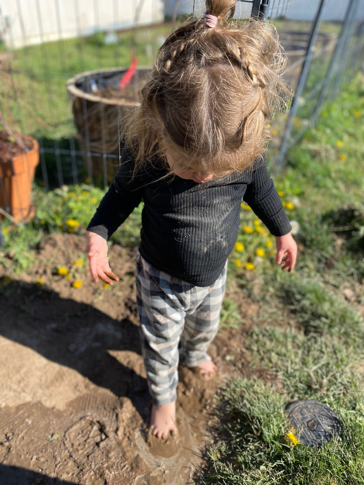

A woman who slowed down
and found something worth sharing.
This year, I radically cleared my family's calendar. We moved somewhere with mountains and quiet, and I started asking myself what actually brought my soul peace.
What I kept coming back to: Time spent deep in nature. Slow mornings dripping with classical music. Feeding my babies nourishing meals. Tiny feet splashing in mountain streams. A garden to tend to. Reading, reading, reading. Cultivating a beautiful life, daily.
Moss & Mail grew out of that. Out of a belief that women who are tired but trying, and love beautiful things, deserve to be reminded: the slower life is not somewhere else. It is available right now, in whatever space you have, with whatever you have in it.
Kayli Angeleaux is a Utah-based creative entrepreneur, slow living advocate, and founder of Moss & Mail, a monthly handwritten letter subscription club. She creates content at the intersection of intentional motherhood, Charlotte Mason homeschooling philosophy, and analog living — encouraging women to slow down, write more letters, and reconnect with nature and the people they love. Kayli's work is rooted in the belief that receiving a handwritten letter can change the pace of an ordinary day.